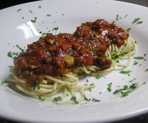

Spaghetti an Steinpilz-Tomatensauce
5 von 6Eine Karotte, eine Zwiebel, ein kleines Stück Stangensellerie mit Olivenöl andämpfen. Mit Rotwein ablöschen. Eine Büchse Pelatti dazugeben. 20 min. kochen lassen. 1 Pack gefrorene Steinpilze dazu geben und köcheln bis sie gar sind. Mit Salz, Pfeffer und frischer Petersilie abschmecken.
